Uważam, że miałem sporo szczęścia. Zimą spędziłem na Podlasiu zaledwie trzy dni. W tym czasie żubry spotkałem aż pięciokrotnie. Nigdy wcześniej nie byłem w Białowieży, ten plener był więc dla mnie wyjątkowo ważny. Przed wyjazdem spędziłem wiele godzin z książkami, artykułami, podcastami oraz oglądając fotografie i materiały wideo poświęcone Puszczy i jej mieszkańcom. Plan był zdecydowanie elastyczny. Poza kilkoma stałymi punktami moim celem było właśnie spotkanie z żubrami. Jak się okazało, nie miałem na co narzekać.
Z Krakowa wyruszamy we trójkę późnym rankiem. Oprócz nas na plener organizowany przez Okręg Warmińsko-Mazurski ZPFP jedzie jeszcze kilka osób z naszego okręgu. Pomimo problemów w drodze, konieczności powrotu i wymiany samochodu docieramy w końcu późnym wieczorem do Białowieży. Zmęczeni drogą, po całym dniu rozmów o fotografii, przyrodzie i naszych oczekiwaniach, na miejscu szybko znikamy w pokojach.
Pobudka jest wczesna, choć w lutym można pozwolić sobie na odrobinę luksusu, słońce wstaje później, więc śpimy do piątej. W pokoju mamy tylko wrzątek, na śniadanie jest owsianka błyskawiczna do której wkrajam banana i dorzucam garść orzechów. Solidna porcja kalorii niezbędna wśród chłodnych pól. Poza poranną owsianką moja dieta składa się głównie z batonów orzechowych dla energii, bananów, jabłek dla błonnika i okazjonalnego hotdoga kiedy mijamy po drodze stację. Kolejny ciepły posiłek zjem dopiero wieczorem, a i to będzie zalany wrzątkiem liofilizat. Szkoda nam czasu na przesiadywanie w restauracji.
Według prognozy przez cały wyjazd chmury będą szczelnie zasłaniać niebo, nie ma więc co liczyć na spektakularne wschody i zachody słońca. Nie zrażeni tymi warunkami wyruszamy gdy niebo ledwo pojaśniało. Już kilkadziesiąt metrów za bramą trafiamy na obgryzioną przez wilki nogę łani. Na śniegu widać kilka kropli krwii. Musiały ją zgubić w biegu. Czerwień zmrożonych strzępów mięsa wyraźnie odcina się na białym tle. Tętno mi przyspiesza. Od kiedy postanowiłem tu przyjechać, mam z tyłu głowy wilki. Choć wiem, że szanse na spotkanie z nimi są znikome, oczekiwania rosną. Białowieża leży w środku puszczy, krajobraz składa się z nielicznych zabudowań, gęstych dzikich lasów i terenów otwartych: łąk i pół. To wspaniały teren dla jeleni, a w ślad za nimi podążają wilki.
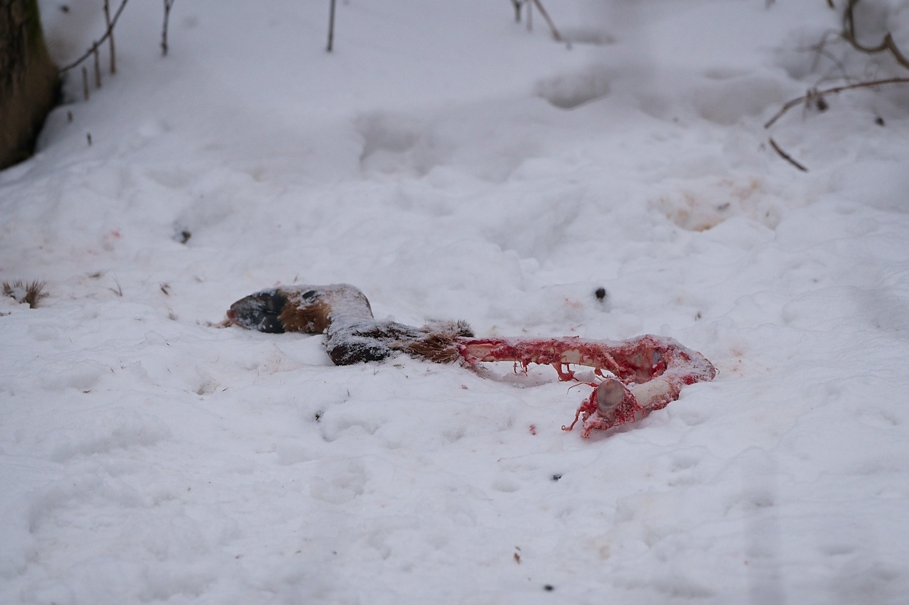
Jest zimno, pusto i cicho. Skręcamy w kierunku Teremisek, tuż na granicy wsi dostrzegam stado jeleni. Zatrzymuje się i powoli wysiadamy. Białe pnie brzóz odcinają się na tle ciemnego lasu, na pierwszym planie dumny jeleń powolnym krokiem przemierza łąkę na skraju drzew. Jest czujny, ale spokojny. Mam wrażenie, że jest tutaj u siebie, na tyle pewny, że nie przejmuje się samochodami na poboczu. Przez chwilę daje się fotografować. W tym czasie mija nas kolejne auto. Byk powoli dołącza do stada i razem znikają za rosnącymi na miedzy krzewami. To pierwsze zdjęcia tego pleneru, dobry znak.
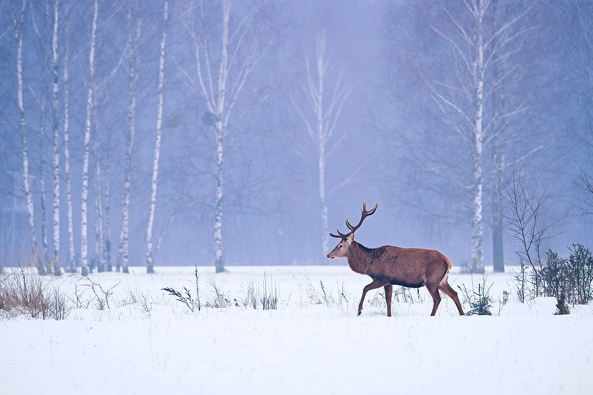
Przejeżdżamy powoli przez Teremiski. Nigdzie nie dostrzegamy sędziwych żubrów, które spędzają tu emeryturę żerując na wyłożonym dla nich sianie. Zatrzymujemy się kawałek za Budami i ruszamy naszą krakowską grupą przez las. Po drodze spotykamy kowaliki, dzięcioły, gile i sikory. Przechodząc przez mostek na Łutowni dostrzegamy świeże tropy rysia. Po kilkunastu minutach ruszamy dalej, ale nasze poszukiwania są bezowocne. Postanawiamy podzielić się na mniejsze grupy.
Ponownie we trójkę wracamy do auta i jedziemy w kierunku Narewki i dalej na północ. Prowadzi nas doświadczenie Wojtka i informacje sprzed kilku dni. Drogi są pokryte śniegiem, po drodze mijamy tylko auto straży granicznej. Po kilkunastu kilometrach wjeżdżamy z lasu na otwarte tereny. Od kiedy zmieniono sposób dokarmiania żubrów, zimą wychodzą z lasu. Wracają do preferowanych przez siebie terenów otwartych. Jedziemy powoli, samochód z wyższym zawieszeniem został w domu, więc każdy zjazd rozważam dwa razy. Robimy sporo kilometrów i zaliczamy kilka spacerów. Na zaśnieżonych łąkach odnajdujemy coraz liczniejsze ślady: tropy, odchody, żółte ślady moczu i duże wygniecione przez leżące żubry niecki. Niektóre są starsze, inne całkiem świeże. Z każdym kolejnym odkryciem czuję, że jesteśmy coraz bliżej.
Mija siódma lub ósma godzina, kiedy w końcu przy drodze dostrzegamy trzy żubry przy wyłożonym sianie. Parkujemy na szerokim poboczu i ostrożnie zaczynamy podchodzić bliżej. Korzystamy z zamarzniętego rowu i osłony, jaką daje sucha trawa i śnieżne zaspy. Nie oszukujmy się, żubry łypią na nas od czasu do czasu i doskonale zdają sobie sprawę, że tu jesteśmy. Trzymamy się z boku i utrzymujemy sporą odległość. Współczesny sprzęt pozwala na obserwacje i fotografie z dużej odległości. Drogę zagradza nam niewielki mostek, mijam słupek, na którym jeden z żubrów zostawił kilka kłębków sierści. Tu się zatrzymuję. Po kilkunastu minutach wycofuje się zadowolony.
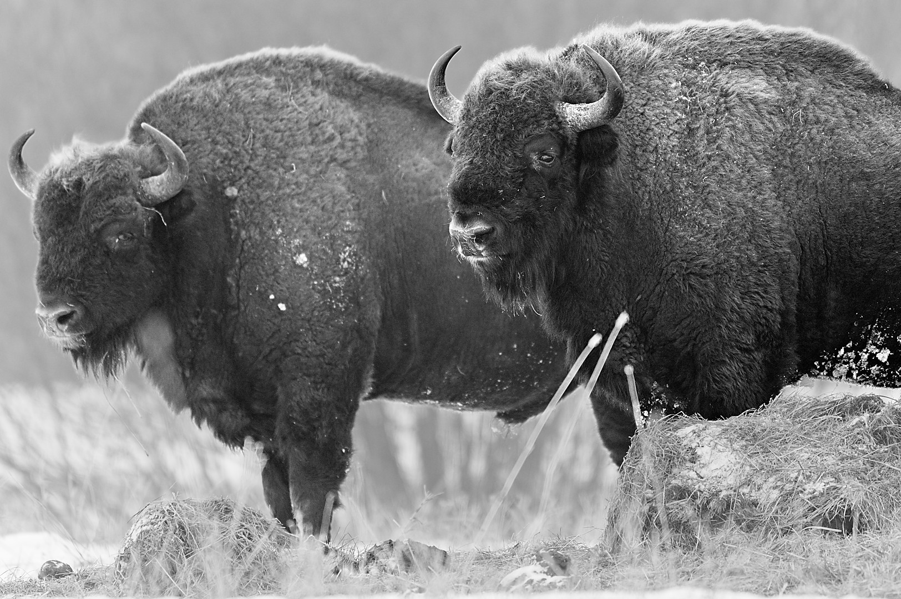
Siadam na nasypie, po którym biegnie droga. Obserwując z oddali trzy byki, żuję mój baton orzechowy. Dopiero z tej odległości mogę docenić ich rozmiar. To największe lądowe ssaki dziko zamieszkujące Europę, mogą ważyć nawet ponad 800 kg. Ich sierść jest długa i gęsta. Izoluje tak dobrze, że utrzymuje się na niej śnieg i szron. Po chwili żubry przechodzą kawałek dalej, prezentując się na szerszym tle. Robię kolejne zdjęcia, tym razem więcej uwagi poświęcając sylwetce żubra w krajobrazie. Po kilku kolejnych minutach wracamy do auta. Po godzinach poszukiwań napięcie trochę opada, nawet gdyby później nic więcej się nie wydarzyło dzień jest udany.
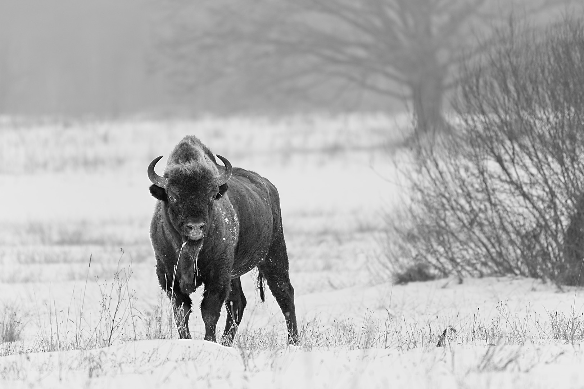
Mamy jeszcze czas, postanawiamy sprawdzić kolejne kilka miejsc. Jedziemy w kierunku Zalewu Siemianówka. Mamy informacje sprzed kilku dni o sporym stadzie w tym rejonie. Nic jednak nie widać. Zaglądamy w kilku miejscach do lasu, szukamy miejsc na jutro. Zmęczeni ruszamy w drogę powrotną. Nagle między drzewami widzę ciemne sylwetki, mijamy niewielki zagajnik i są! Duże stado, jest ich ponad czterdzieści. Nie wierzymy we własne szczęście. Zawracamy i parkujemy przy tym samym niewielkim zagajniku, musimy przejść spory kawałek.
Chowamy się za drzewami, po kilku minutach dochodzimy do łuku drogi i postanawiamy wejść w młodnik. Pod osłoną gałęzi skradam się, a potem czołgam na skraj drzew. Pnie młodych sosen oblepia sierść żubrów. Ponownie nie mam złudzeń, one dobrze wiedzą gdzie jesteśmy, jednak w tej odległości nic sobie z nas nie robią. Sto metrów to dystans, przy którym żubr na ogół nie czuje się jeszcze zagrożony. Staram się zachować go z zapasem.
Leżę na śniegu, zimno jeszcze nie pokonało licznych warstw izolacji, które mam na sobie. Koledzy leżą kilkanaście metrów obok mnie. Śnieg skrzypi, kiedy odrobinę się przesuwam. Zmieniam pozycję, żeby mieć dobry widok. Chcę jak najlepiej wykorzystać śnieg. Żubry na polu wróciły do swoich spraw, od czasu do czasu jeden z nich posyła krótkie spojrzenie w naszym kierunku. Pole wznosi się delikatnym łukiem, po kilku próbach udaje mi się uporządkować bałagan w tle.
Przestałem się poruszać, oddech się uspokaja. Tylko od czasu do czasu dobiega nas odgłos samochodu przejeżdżającego oddaloną o kilkaset metrów drogą. Stado jest duże, w zasadzie tuż obok, jednak w ogóle ich nie słychać. Gdybym zamknął oczy, nic nie zdradziłoby ich obecności. Można by pomyśleć, że tak duże zwierzęta będą sporo hałasować. Żubry jednak są zaskakująco cichymi stworzeniami. Nie dane mi było usłyszeć ich charakterystycznego chruczenia.
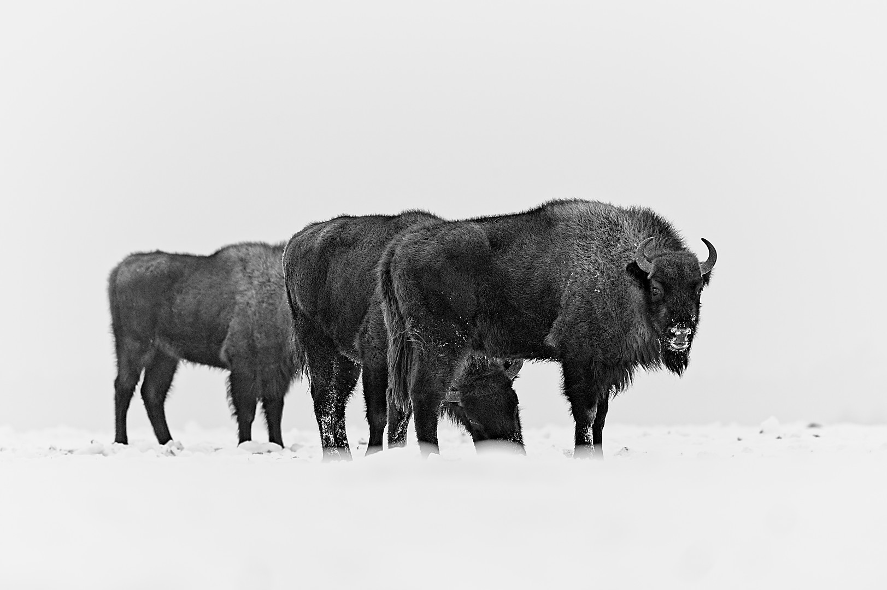
Spędzam tu prawie godzinę. Wpierw fotografuję szeroko, duże grupy, potem powoli przesuwam w wizjerze kolejne sceny z życia stada. Obserwuję, jak część z nich w lekkim oddaleniu grzebie w śniegu w poszukiwaniu resztek roślin. Co chwilę któryś mocno fuka, rozrzucając śnieg na boki. Krowy z młodymi skupiają się w środku. Młodych jest kilka i są w różnym wieku. Najmłodsze na głowie mają jedynie niewielkie zawiązki rogów. Starsze już próbują swoich sił względem rówieśników, lecz czujni dorośli nie pozwalają im na poważniejsze potyczki.
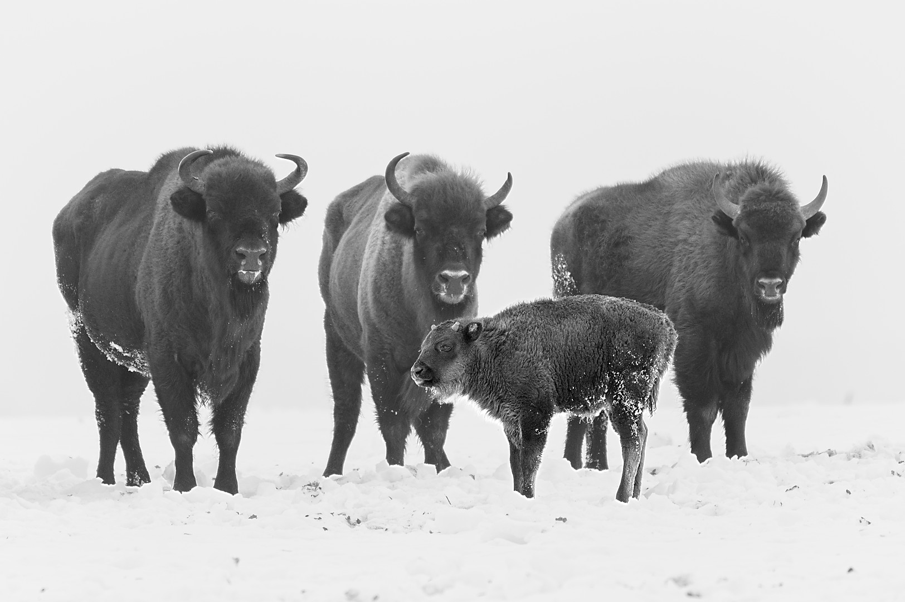
Widzę dorosłe osobniki, które poszturchują się głowami. Przymierzają się do siebie i delikatnie przepychają, ćwicząc przed przyszłymi potyczkami. Twarde czoła i wygięte rogi wyglądają groźnie, lecz ich ruchy mają w sobie cel i zamiar. Jest w ich zachowaniu delikatności, rodzinna czułość.
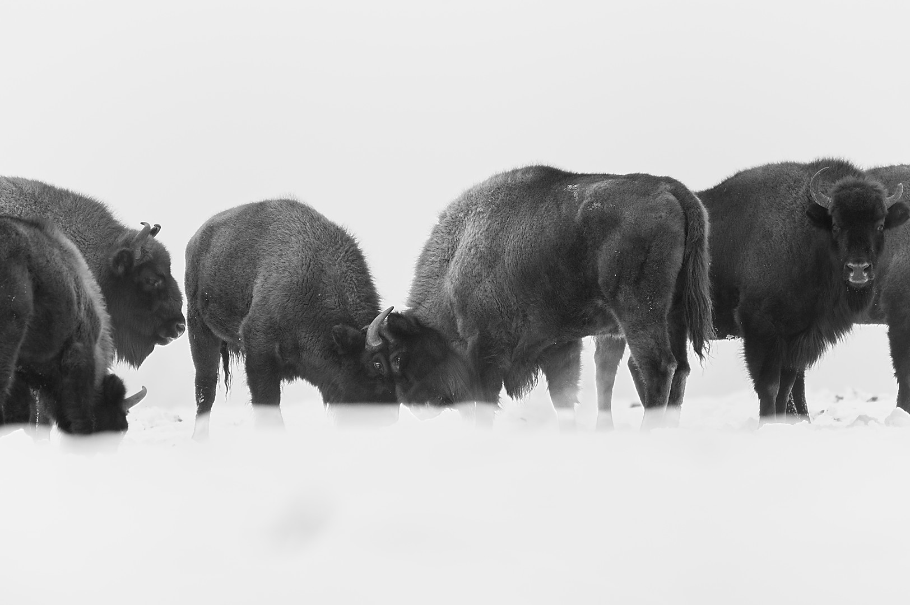
Tuż obok reszta stada zajmuje się swoimi sprawami. Niektóre pokładają się w śniegu, inne rozglądają się spokojnie po okolicy. Stoją, opierają się chłodowi, ich sierść kołysze się na leciutkim wietrze. Jedno z młodych zaczyna ssać matkę, inne kładzie się obok i niemal znika za niewielką śnieżną zaspą.
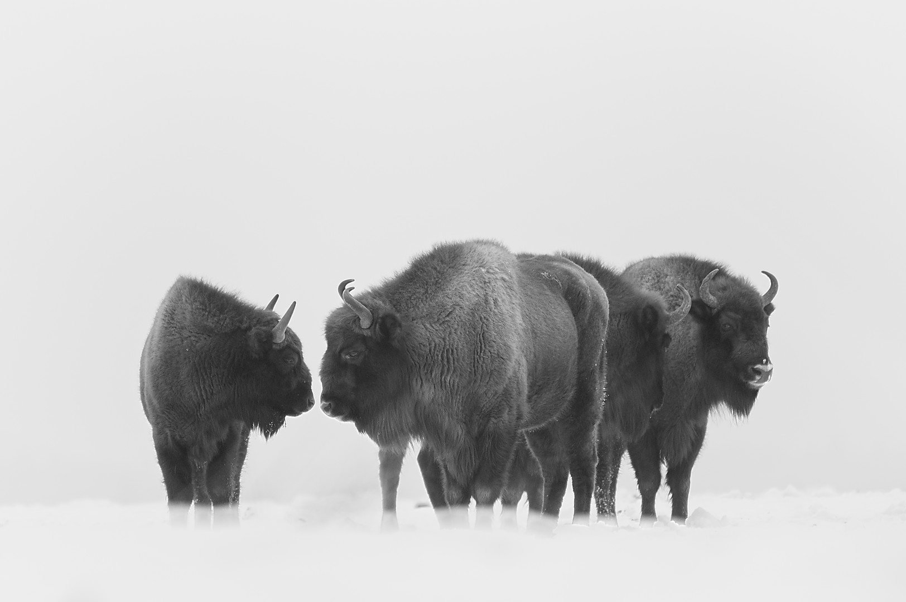
Czuję, jak zimno zaczyna wkradać mi się do brzucha, mięśnie wystygły i zaczynam marznąć. Opuszczam aparat. Obserwuję je gołym okiem, tylko od czasu do czasu łapiąc jakiś ciekawy moment. Potem, z trudem podnoszę się i ruszamy w drogę powrotną. Ruch ponownie przykuł ich uwagę, odprowadzają nas czuje spojrzenia. Już w samochodzie zdaję sobie sprawę, że te zdjęcia miałem w głowie od dawna.
Ruszamy dalej, ale dosłownie po kilkuset metrach znów skręcamy w boczną drogę. Pojedyncze żubry pasą się na polu. Spędzam tu krótkie kilkanaście minut i robię jedno z moich ulubionych zdjęć z wyjazdu.
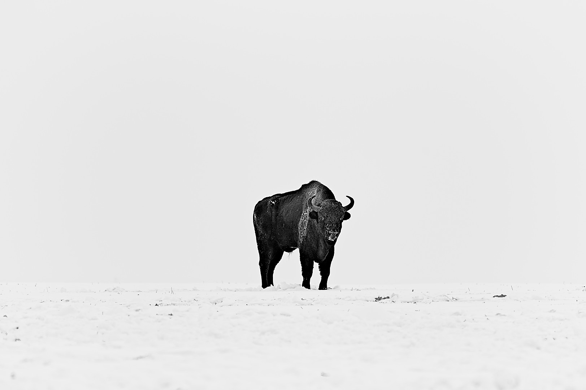
Teraz to już naprawdę koniec. Zmęczeni i usatysfakcjonowani wracamy do ośrodka. Kiedy dojeżdżamy, jest już ciemno. Czasu starcza by się przebrać i na szybko zalać sobie coś ciepłego do zjedzenia. Od osiemnastej czeka nas maraton spotkań i prezentacji. Dowiemy się sporo o puszczy i wilkach od Adama Wajraka, obejrzymy prezentację innych członków ZPFP. Dzień który zaczęliśmy przed świtem, dobiega końca niewiele przed północą. Przed zaśnięciem przeglądam jeszcze zdjęcia z dzisiaj, w głowie wybieram najlepsze, planuje obróbkę, zauważam błędy i staram się wyciągnąć wnioski.
Kolejny dzień również zaczynamy wcześnie. Sprawdzam karty pamięci, baterie i pakuje sprzęt do plecaka. Owsiankę popijam herbatą. Na szczęście buty zdążyły wyschnąć. Ubieramy się i ruszamy w teren. Tym razem nie jedziemy daleko. Idąc za radą zasłyszaną wczoraj, chcemy pochodzić duktami wokół Teremisek, w poszukiwaniu śladów wilków. Po kilku minutach jazdy zostawiamy auto na pustym parkingu i ruszamy w las. W drodze żartuję, że po wczorajszym dniu brakuje mi już tylko żubra w lesie.
Rozmawiamy o Puszczy i wczorajszych spotkaniach, sporą część jednak przechodzimy w milczeniu. Śnieg skrzypi pod butami. Przez pierwsze godziny znajdujemy jedynie ślady lisów i spotykamy dwie łanie, które szybko czmychają w las. W wiatrołomie obserwujemy rozkrzyczane dzięcioły.
W pewnym momencie widzę, że w oddali coś leży na drodze. W pierwszym odruchu myślę, że to zwalony pień. Niewzruszony idę dalej. Może jednak to samochód? Kształt się zgadza, ale rozmiar nie bardzo. Poza tym skąd tu samochód? Chyba że leśnicy. Wyjmuje lornetkę. To żubr, mówię na głos. Chłopaki nie wierzą, sprawdzają sami. Nasz zamówiony rano żubr w lesie, żartujemy.
Po chwili dociera do nas że, jest ich więcej. Stado nie jest tak liczne jak to z wczoraj, ale naliczyliśmy ponad dwadzieścia osobników. W lesie są dużo bardziej czujne, nie pozwalają się zbliżyć. Gdy tylko nas usłyszały, rozpoczęły powolny odwrót w głąb lasu. Nawet nie próbujemy podchodzić, zostajemy na drodze. Dają się jednak przez chwilę fotografować pomiędzy drzewami.
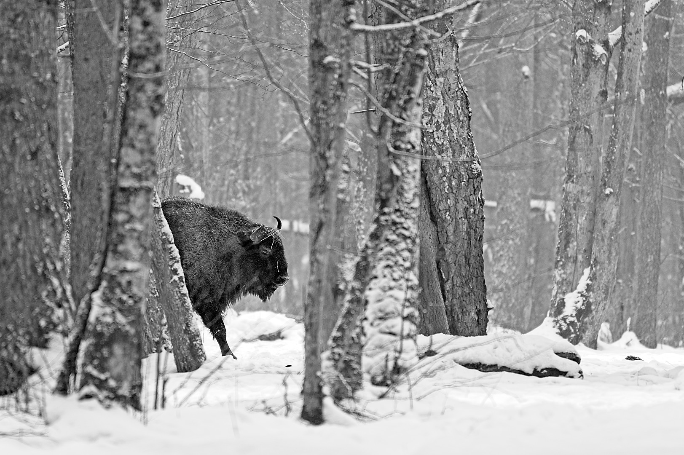
Żubry w lesie to niesamowity widok. Pomimo rozmiarów poruszają się w nim zwinnie. Na ogół kojarzymy je z gęstymi lasami, preferują jednak tereny otwarte, zwłaszcza w zimie kiedy pomiędzy drzewami jest mniej pożywienia. Na podlasiu zimą pomaga im przetrwać regularne dokarmianie, które również ma na celu zmniejszyć straty w rolnictwie. Sposób dokarmiania jest jednak modyfikowany, a coraz większy nacisk kładzie się na to, by populacja była mniej zależna od pomocy człowieka. Stąd coraz więcej żubrów wychodzi zimą na pola i łąki, nierzadko „wchodząc w szkodę”.
Kilkanaście tysięcy lat temu w tej części Europy krajobraz był znacznie bardziej otwarty, z rozległymi środowiskami stepowymi i tundrowymi. Taki teren sprzyjał dużym roślinożercom. Z czasem krajobraz zaczął się zmieniać, a wraz z ekspansją człowieka i zmianami środowiska większość europejskiej megafauny zniknęła. Żubr przetrwał. Jest gatunkiem plastycznym, dostosował się do zmian, a las stał się jednym z miejsc, w których mógł się przed człowiekiem ukryć. Potrzebuje przy tym moizaiki terenów leśny i otwartych, dlatego naturalnie ciągnie na pola i łąki. Dziś jest gatunkiem konfliktowym i jego ochrona wymaga kompromisów. Uważam, że ten koszt powinien spoczywać na nas wszystkich, jako społeczeństwie, nie tylko na rolnikach mieszkających w sąsiedztwie.
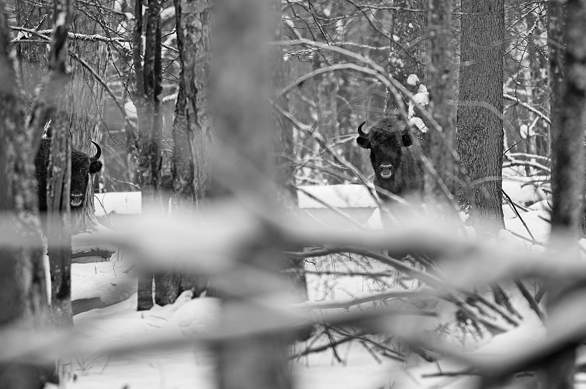
Ponownie wracamy do bazy zadowoleni. Dziś wcześniej, wybieram się z przewodnikiem do rezerwatu ścisłego. Wczoraj Adam Wajrak powiedział, że Puszcza Białowieska jest wyjątkowa, jednak nie musi taka być, wystarczy że części lasów pozwolimy rosnąć bez naszej ingerencji. Nie chcę przegapić okazji, żeby zobaczyć na własne oczy jeden z najlepiej zachowanych fragmentów naturalnego lasu w Europie.
Idąc starymi, wyciętymi lata temu duktami, podziwiam monumentalne lipy rosnące w głębi lasu. Ich pojedyncze pnie nie muszą być tak stare jak najstarsze dęby, ale lipy mają niezwykłą zdolność do wypuszczania odrostów. Stary pień może otaczać gęsta palisada młodszych, wyrastających obok pni. Kiedy następnym razem będziecie w lesie, poszukajcie takiej lipy. Patrząc na nią, trudno nie zadać sobie pytania, ile naprawdę może mieć lat.
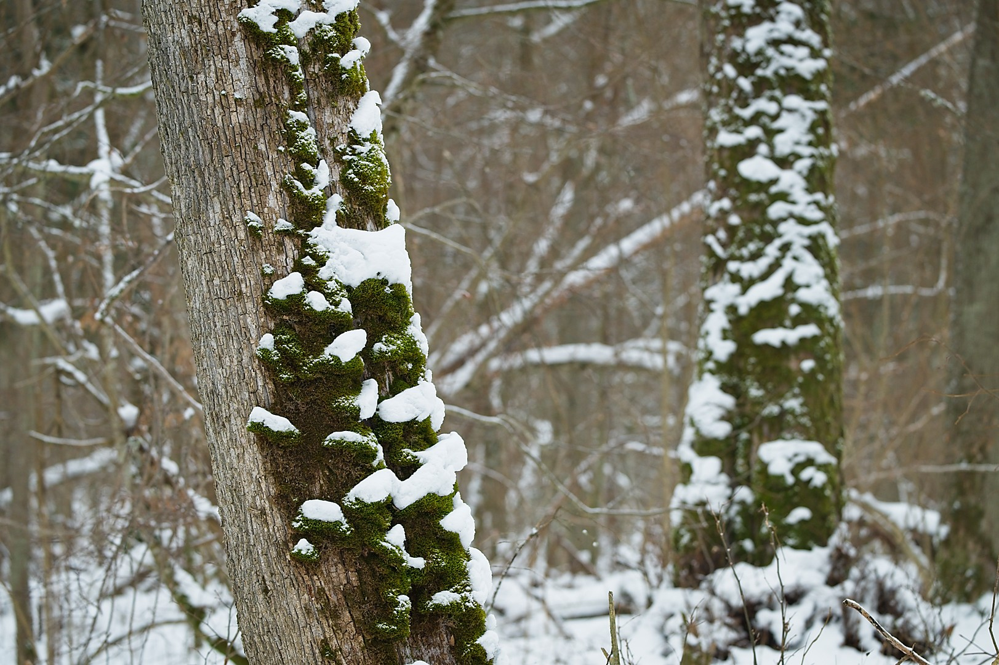
Idziemy dalej, skręcając w wąziutką ścieżkę meandrującą pomiędzy powalonymi pniami i wykrotami. Naturalnie rosnący las jest bardzo trudnym terenem do poruszania się. Nic dziwnego, że przez wieki był schronieniem również dla nas. Spacer trwa ponad dwie godziny. Słuchamy historii lasu i pojedynczych drzew, dowiadujemy się, jaką rolę pełnią w nim korniki i dzięcioły, a także w jaki sposób las dostarczał ludziom pożywienia. Myślę, że każdy powinien tu przyjechać chociaż raz, żeby zobaczyć co gdzie indziej tracimy. Tego lasu nie da się łatwo opisać, nie jest w żaden sposób podobny do znanych nam na co dzień lasów gospodarczych. To po prostu inny świat.
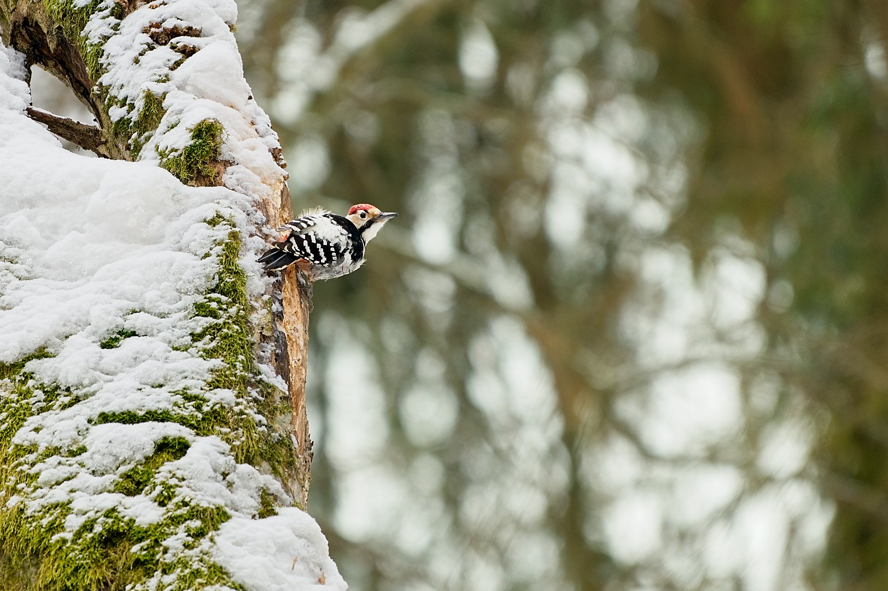
Po powrocie z rezerwatu przechadzam się jeszcze po polach i odwiedzam karmnik w Parku Pałacowym. Wieczorem odwiedzamy Instytut Badań nad Ssakami po, którym oprowadził nas Rafał Kowalczyk. Miło posłuchać na żywo kogoś, kogo wcześniej znałem z tekstów i kilku wywiadów, w tym bardzo dobrego materiału o żubrach dla Naturalnie z WWF, którego słuchałem podczas przygotowań do wyjazdu.
Ostatniego dnia pozwalamy sobie pospać godzinę dłużej. Plener był bardzo owocny, a dzisiaj czeka nas długa droga do domu. Dobrze zebrać odrobinę więcej energii. Po śniadaniu ruszamy w ten sam rejon co wczoraj, przewodniczka potwierdziła wczoraj przypuszczenia, że jest to dobre miejsce na spotkanie z wilkami. Wybraliśmy nieco inna trasę. Po chwili jednak napotykamy ludzi, najpierw jedną potem drugą grupę. Rezygnujemy z lasu i chcemy sprawdzić co słychać nad pobliską rzeką.
W drodze, przechodząc na granicy wsi ponownie spotykamy żubra. Tym razem jest to sędziwy samiec, który ustąpił miejsca młodszemu bykowi i swoją emeryturę spędza bliżej ludzi, korzystając z wygody wyłożonego za płotem siana. Jest bardzo spokojny, przywykł do obserwujących go ludzi i pozwala podejść bliżej. Na jego bujnej sierści osadza się padający śnieg. Masywny grzbiet opada łukiem ku głowie na której widnieją zużyte rogi, wspomnienie dawnego króla. Trudno wyobrazić sobie lepsze spotkanie na zakończenie pleneru.
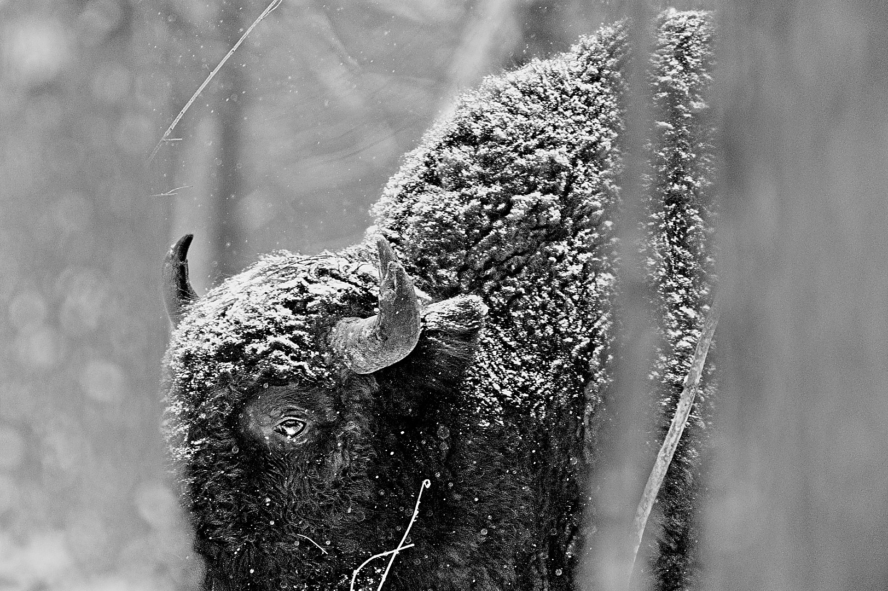
Wracamy do bazy koło jedenastej, pakujemy się, wymieniamy pożegnania z gospodarzami i tym razem bez przygód w drodze docieramy wieczorem do Krakowa. W trzy dni udało mi się spotkać żubry pięć razy. Chyba rzeczywiście miałem sporo szczęścia.